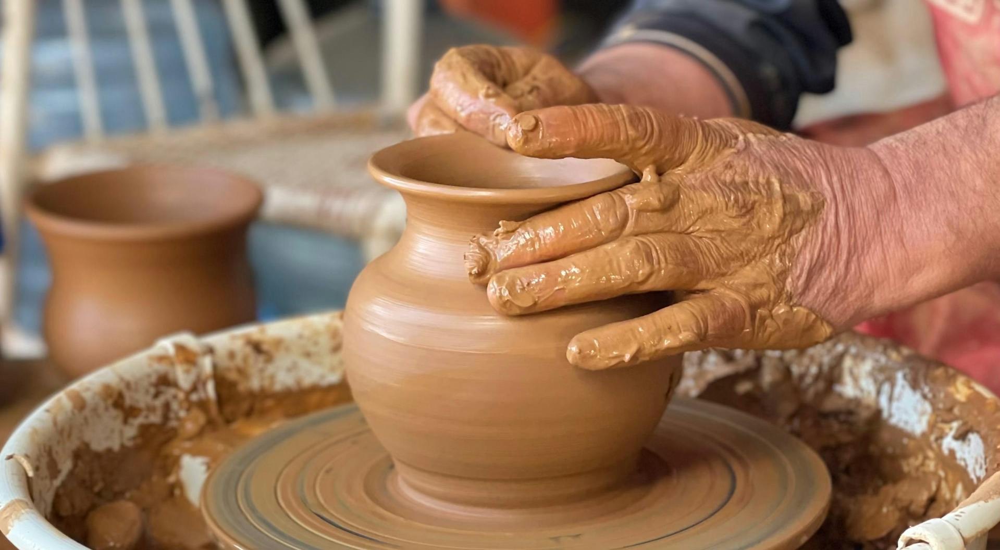
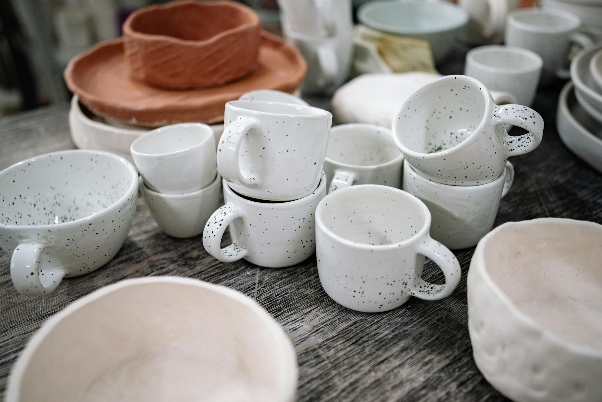

El arte de la alfarería
La alfarería es el arte con el que nuestras manos dan vida a objetos únicos y funcionales.
En las jornadas de este año en Morella, ponemos el foco en el proceso creativo que transforma una masa informe de arcilla en una pieza de cerámica. Este arte requiere paciencia, precisión y, sobre todo, un conocimiento profundo de los materiales naturales que nos ofrece nuestro entorno.
Guía básica del modelado en torno
-
- Preparación y amasado
- Se elimina el aire de la arcilla para evitar burbujas que puedan romper la pieza en el horno.
-
- Centrado y apertura
- En el torno, se fija la arcilla en el eje exacto y se presiona el pulgar en el centro para crear la base.
-
- Subida de paredes
- Con las manos húmedas, se aplica presión constante para dar la altura y el grosor deseado a la pieza.
-
- Retorneado y detalles
- Una vez que la pieza tiene consistencia "de cuero", se eliminan los excesos y se añaden grabados o texturas finales.
Cocción y decoración
El proceso de cocción es el momento crítico donde el agua química desaparece para dar paso a la vitrificación del material.
Tras el modelado, las piezas deben secarse lentamente a temperatura ambiente para evitar grietas. Posteriormente, se introducen en el horno cerámico en una primera cocción llamada "bizcochado", alcanzando temperaturas superiores a los 900°C que endurecen la estructura permanentemente.

Finalmente, llega la etapa del esmaltado y la decoración. Aplicar óxidos metálicos o pigmentos permite que platos y tazas adquieran esos acabados brillantes y coloridos que vemos en las mesas de Morella, cerrando un ciclo que une utilidad, tradición y belleza estética.